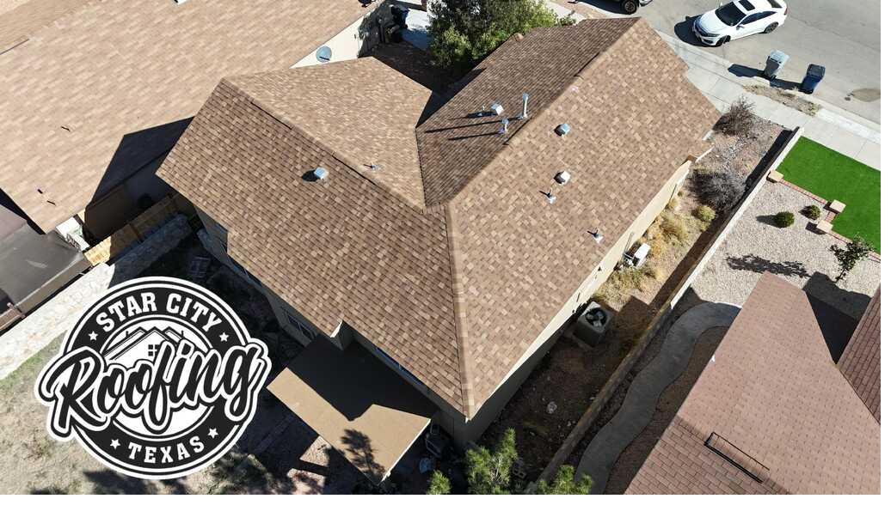
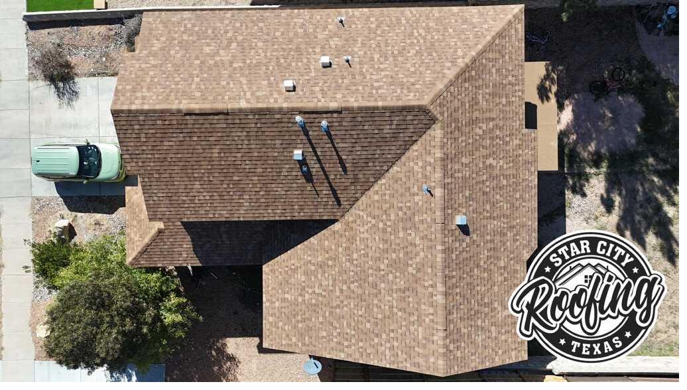

El Paso's Storm Season: What It Does to Your Roof
El Paso receives most of its annual rainfall, roughly 8 to 10 inches, during a compressed high window from July through September. What makes El Paso's storm season uniquely destructive isn't just rain. It's the combination of large hail, wind gusts exceeding 60 mph, and rapid weather changes that can flip from blue skies to a Category 1 hurricane-force squall in under 20 minutes.
Asphalt shingles already weakened by El Paso's 300+ days of UV exposure are especially vulnerable. A shingle that might survive a hailstorm at age 5 can be shattered or heavily granule-stripped at age 12 or 15. After a significant storm passes through your neighborhood, whether it's Northeast El Paso, Horizon City, Socorro, or anywhere in between, getting a professional inspection is always the right move, even if you don't see obvious damage from the ground.
Types of Storm Damage We Repair
Hail Damage
Hail is the most common storm damage claim in El Paso. Even modest hailstones, 3/4 inch to 1.5 inches, leave circular impact marks that strip granules from asphalt shingles, expose the underlying mat, and accelerate UV degradation. Metal components (valleys, gutters, ridge vents, flashing) show visible dents. Larger hail splits and cracks shingles outright. We document every point of impact with detailed photography before making any repairs.
Wind Damage
high wind gusts in El Paso regularly reach 50–70 mph. High wind lifts shingles at their edges, breaks the adhesive seal strips, and can blow entire sections off, especially on older roofs where the seal strips have dried out. Ridge caps are the most vulnerable component; they take the full force of wind from both directions. Missing or lifted shingles create instant water intrusion pathways during subsequent rain.
Debris Impact
high winds carry tree branches, construction materials, and, in El Paso's desert environment, tumbleweeds and ocotillo debris that can puncture shingles or break them at the tab. Even smaller debris driven at 50+ mph can crack aged shingles or dislodge flashing around chimneys and vents.
Flashing Displacement & Water Intrusion
Wind pressure can separate flashing at chimneys, skylights, pipe boots, and walls without visibly damaging the surrounding shingles. These gaps become water entry points during the next rain. heavy rains are often short and intense, a half-inch of rain in 20 minutes can push enormous water volume through a flashing gap that went unnoticed for weeks.
Fascia, Soffit & Gutter Damage
Wind-driven rain enters through damaged fascia and soffit, causing wood rot and potentially reaching interior framing. Gutters detached by wind or weighted with debris fail to redirect water away from the foundation. We assess and repair these components as part of a complete storm damage restoration.
Emergency Tarping, When You Need Immediate Protection
If a storm has created active leaks, water coming through your ceiling, saturating insulation, or damaging drywall, call us immediately at (915) 740-5961. We deploy emergency tarping to stop active water intrusion while we document the full extent of the damage and schedule permanent repairs. Emergency tarping prevents secondary damage, which is often more costly and more disruptive than the roof repair itself.
Insurance Claim Assistance, Honest & Thorough Documentation
Most homeowners insurance policies cover hail and wind damage, but a successful claim starts with thorough, professional documentation. Insurance adjusters are experienced at identifying damage, but they're also managing large claim volumes after a widespread storm event and may miss secondary damage points that aren't obvious.
Here's how we help:
- Pre-adjuster inspection: We inspect your roof before the adjuster arrives, identify every impact point, and note pre-existing conditions separately so they don't complicate your claim
- Photo documentation: Every damaged area is photographed in detail, creating a clear record of hail strikes, granule loss, cracked shingles, and displaced flashing
- Present during adjuster inspection: We can be on-site during the adjuster's visit, walk the roof with them, and make sure every damage point gets into the claim
- Detailed written estimate: Our estimate is formatted to align with Xactimate pricing standards that most insurers use, making the supplement process straightforward
- RCV supplement support: After the ACV check, we help you understand the recoverable depreciation process and what documentation is needed to receive the full replacement cost
We don't make promises about what your insurance will cover, that's between you and your insurer. But we make sure your damage is fully documented so you're not shortchanged.
Service Areas, Storm Damage Repair Across Greater El Paso
We respond to storm damage calls throughout El Paso and the surrounding region. Hailstorms in El Paso can track along predictable corridors, often hitting Northeast El Paso and East El Paso hard in July and August, and sweeping through Horizon City and Socorro as storms track east along I-10. West El Paso faces high wind exposure from Franklin Mountain downdrafts, and the Upper Valley sees windstorm damage from Rio Grande Valley wind corridors.
Before & After: Storm Damage Repairs

Before

After

Hail Impact

Before

After

Completed
Frequently Asked Questions, Storm Damage Roof Repair
Most standard homeowners policies cover hail and wind damage, but coverage depends on your policy, your deductible, and whether the damage is deemed functional or purely cosmetic. The key is documentation, we photograph every damaged shingle, dent in metal flashing, and impact point to give your adjuster the full picture. We can also be on-site during the inspection so nothing gets overlooked.
We respond to storm damage calls same day whenever possible. During El Paso's storm season (July through September), we keep emergency slots open in our schedule. If your roof is actively leaking and causing interior damage, call us immediately at (915) 740-5961, we can deploy emergency tarping to stop water intrusion while we schedule permanent repairs.
Hail damage on asphalt shingles typically shows as circular impact marks with surrounding granule loss, the protective granule coating is knocked off, exposing the asphalt mat underneath. You may also see cracked or split shingles, bruised areas that feel soft when pressed, and dented metal flashing, gutters, or ridge vents. Damage that's not visible from the ground is often extensive up close, which is why a professional inspection is essential after any hailstorm.
It depends on the extent of damage and your deductible. If damage is widespread, affecting most of your roof or causing leaks, an insurance claim almost always makes sense. If it's minor and the repair cost is close to your deductible, paying out of pocket avoids a claim on your record. We'll give you an honest assessment of the damage scope and cost so you can make an informed decision. We don't push people toward unnecessary claims.
After filing a claim, an adjuster is typically scheduled within 3–7 business days. Once the claim is approved and you receive the ACV (Actual Cash Value) check, we can schedule the work. Final payment, the supplement covering recoverable depreciation, usually comes 30–60 days after the work is completed and you submit your invoice to the insurance company. Total timeline from storm to completed repair is typically 4–10 weeks depending on your insurer and material availability.
What Does Storm Damage Repair Cost in El Paso?
The cost depends on what the storm actually did. Here's a realistic breakdown based on El Paso jobs:
- Insurance-covered replacement: You pay your deductible (typically $1,000–$2,500). The insurer covers the rest of a full replacement once the claim is approved.
- Minor hail damage repair (small section): $400–$1,500 out of pocket if below your deductible or for minor cosmetic damage
- Partial replacement after storm: $3,000–$8,000 depending on affected area
- Full replacement via insurance: $9,000–$20,000+ at replacement cost; your insurer pays minus deductible
The free inspection is always the right first step. We'll tell you exactly what's damaged, whether it qualifies for a claim, and what your out-of-pocket looks like either way.